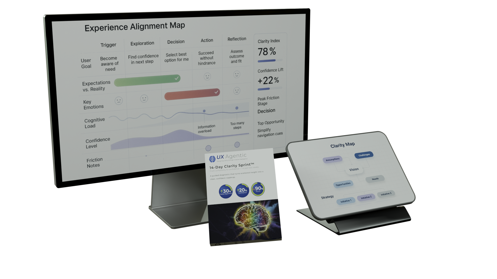
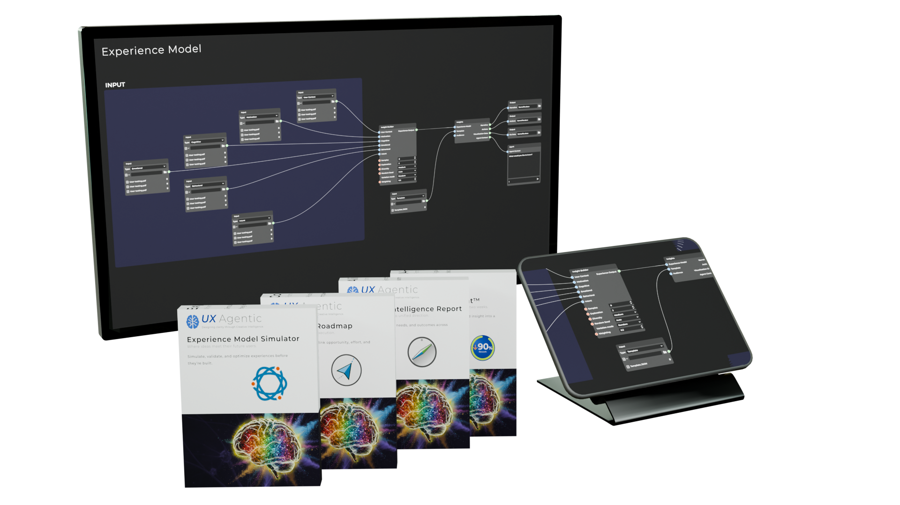

Trusted by enterprise product and UX leaders navigating transformation with clarity and confidence.
When research isn’t enough.
Teams today don’t struggle for data — they struggle for direction.
Research piles up, insights conflict, and decisions stall while the market accelerates.
The result?
Assumptions instead of understanding.
Rework instead of progress.
Experience Modeling changes that.
It blends human empathy with AI-assisted synthesis to reveal what’s missing, align what’s misaligned,
and focus teams where it matters most — before design even begins.
Introducing Experience Modeling.
The clarity layer between data and design.
What it is.
Most organizations are swimming in research but starving for clarity.
You have the data — but not the model that connects it.
Experience Modeling turns disjointed findings into a living map of how people think, feel, and decide —
and how your product should respond.
How it works.
It isn’t another dashboard or framework. It’s a layer of intelligence between research, design, and strategy
that turns insight into shared direction your team can act on.
What it does for you.
By combining behavioral science, systems design, and intelligent agents, it helps your team:
Reveal hidden friction, emotion, and motivation →fewer drop-offs
Visualize time, effort, and meaning across journeys →clearer prioritization
Simulate “what if” scenarios before you build →avoid costly rework
Align product, design, engineering, and leadership →faster decisions
Applied across complex product moments — from onboarding to retention.
The result: faster alignment, fewer redesigns, and products that feel inevitable — because they’re built from a deeper understanding of what people actually need.
Teams adopt it because it turns messy inputs into shared, measurable direction.
Before: endless data and unclear direction. After: shared understanding and forward motion.
Turns intuition into intelligence.
Grounded in two decades of UX leadership and AI-assisted synthesis, Experience Modeling bridges human empathy and business precision.
It identifies what users truly need, where teams misalign, and how choices impact customers and the company.
When teams finally see the same picture, momentum replaces meetings.
A living model your team can query.
It creates a living model of human understanding that teams can query, visualize, and refine together —
surfacing contradictions, testing “what-if” scenarios, and aligning on next steps.
Clarity you can measure.
Every principle here ties directly to business performance — not theory.
Here’s why it works across every engagement:
Unify fragmented insight → shared understanding across research and leadership.
Validate what matters first → months of effort saved before build.
Translate empathy into KPIs → clarity the whole business can track.
Compound institutional knowledge → faster, more confident decisions every sprint.
Typical outcomes: faster alignment, higher stakeholder confidence, and dramatically less rework.
Under the hood, every design choice is a clarity choice. This is how clarity becomes your team’s competitive advantage.
“Every design decision is a clarity decision. The faster teams find it, the stronger the experience becomes.”
— Allan Zelsman

14-day Clarity Sprint.
In two weeks, find what’s holding users back — and fix it with confidence.
When direction stalls, momentum — and morale — go with it.
This focused sprint uncovers where users struggle most and where small shifts drive outsized impact.
Built on two decades of UX leadership, it compresses months of research into two weeks of clarity.
You get:
Alignment fast: a 90-minute strategy session to unify goals and success signals.
Clarity from noise: AI-assisted mapping that saves weeks of analysis.
Action you can ship: 3–5 priority opportunities that typically lift usability or conversion 10–30%.
Outcome: actionable clarity your team can use immediately — and the confidence to move forward with certainty.
Compared to traditional UX research — often 6–8 weeks and $40K+ for similar clarity — the Clarity Sprint delivers results in 14 days for a fraction of the cost.
Delivered in 14 days. Guaranteed clarity — or we keep working until you have it. Only 3 active Clarity Sprints accepted at a time so every client gets full focus.

Experience Accelerator.
Turn clarity into control.
The Experience Accelerator turns your Clarity Sprint insight into a living, testable Experience Model —
a blueprint for how your product should think, feel, and perform before it’s built.
This is where teams stop guessing — and start leading.
3–4 weeks | $9,500 Only 3 active Accelerators accepted at a time to ensure deep collaboration and speed.
You get:
A working Experience Model: your interactive blueprint of product cognition, emotion, and behavior — powered by intelligent agents.
Journey analysis + optimization roadmap: priorities ranked by Impact × Effort × Confidence with clear next steps.
Interactive Agent Workspace: one month of guided access included — explore findings, test features, validate hypotheses in real time.
Reusable intelligence layer: a living system your team can query, test, and evolve long after the engagement ends.
Outcome: evidence-backed direction, measurable UX performance, and organization-wide confidence in what to build next.
Compared to traditional strategy engagements that cost $50K+ and deliver static reports, the Accelerator installs a dynamic, decision-ready model.
Delivered in under a month. Designed for transformation, not deliverables. Founding Partner bonus: an extra month of Interactive Agent access included (a $1,500 value).
Experience Modeling turns scattered research into measurable business results — connecting clarity to conversion, velocity, alignment, and confidence.
Key performance indicators influenced by Experience Modeling
KPI
What it shifts
Typical lift*
Conversion clarity
From friction and drop-offs → confident sign-ups
+18–32% activation
Experience velocity
From debate loops → faster concept-to-launch
2–3× faster cycles
Stakeholder alignment
From rework and conflict → evidence-based decisions
~50% fewer reworks
Customer confidence
From uncertainty → higher satisfaction and loyalty
+15–25 pts CSAT/NPS
*Ranges are indicative and vary by product, audience, and scope. Compared to traditional UX research — often 6–8 weeks and $40K+ for similar clarity — the Experience Accelerator installs a living decision model in under a month.
We use our own Experience Modeling process to test, validate, and evolve new product concepts before they go to market.
These internal incubation prototypes explore how clarity, empathy, and AI-assisted synthesis can guide complex design challenges — from emotional engagement to trust and motivation — long before real users ever touch the experience.
Each project begins as a hypothesis in our Idea Incubator, where it’s modeled, simulated, and iterated using the same Experience Modeling framework we deliver to clients.
The result is foresight — grounded insight that sharpens both our practice and our partners’ outcomes.
Below are two recent explorations: Quantum Carnival — a wellness sandbox modeling motivation and flow,
and Santa AI — a real-time conversational prototype designed to teach mindful wonder at scale.
Designing delight within mindful boundaries.
Modeling magical dialogue that feels emotionally aware.
Creating trust through transparency — joy for kids, confidence for parents.
Prototype Lab — Santa AI.
What if a seasonal moment could teach mindful wonder — safely, at scale?
We used our Agentic Simulation Framework™ to prototype a real-time, holiday-themed conversational
experience. The aim: design for joy + safety — magical dialogue for kids with clear guardrails and
transparent controls for parents.
By modeling intents, boundaries, and “micro-moments of delight,” we mapped when curiosity spikes, where attention
dips, and which prompts restore flow. We also explored operational realities (session length, voice latency,
personalization without heavy data capture) to keep cost and experience in balance.
What we learned: framing sessions around short, goal-oriented arcs (stories, gratitude, kindness)
increases completion and repeat intent; adding a simple parent “confidence panel” reduces drop-offs; and
seasonal content calendars keep performance high without constant retraining.
Designing wonder isn’t guesswork — it’s modeling the feelings we intend to create.
Where assumptions end and patterns begin.
Simulating how users think, feel, and decide.
Seeing the future of experience before it’s built.
Prototype Lab — Quantum Carnival.
What if you could test emotional engagement before you build?
Here’s how we apply the same Experience Modeling process we use with clients to our own R&D.
Quantum Carnival is a conceptual wellness game we used as a sandbox to model habit loops,
motivation cycles, and progression to mastery.
Instead of live user data, we combined hypothetical personas with agent-driven feedback loops to explore how
different mindsets respond to daily rituals of focus, gratitude, and creativity. The goal wasn’t to ship a game,
but to stretch the framework: can we simulate cognitive friction, reward pacing, and narrative tone well enough
to guide real product decisions?
What we learned: modeling revealed 12 reusable insight patterns — including where feedback rhythms stall,
which rewards sustain momentum, and how “effort curves” should rise and relax to avoid drop-offs. These insights transfer
directly to wellness, learning, and behavior-change products.
Every experiment deepens the empathy that drives the next design.
Our philosophy — Human + AI = Co-Creative Intelligence.
Technology should amplify human understanding — not replace it.
At UX Agentic, we design systems that evolve with us.
This approach, rooted in Reflective AI Architecture™, begins with a simple idea:
when we train our AI with our own mental models, values, and cognitive frameworks,
it learns to think alongside us — not apart from us.
These systems become mirrors to our own genius, reflecting the blind spots and possibilities we might not otherwise see.
As we refine them, they refine us — revealing clearer patterns of thought, emotion, and intention.
It’s not automation; it’s co-evolution.
AI isn’t the replacement for human insight.
It’s the reflection that helps us see it more clearly —
the echo of awareness that evolves with us.
After two decades transforming complexity into clarity, I’ve learned that intelligence — human or artificial —
reaches its highest potential when it becomes self-aware through reflection.
That’s the future we’re designing toward: technology that deepens consciousness, creativity, and connection.